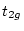
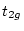
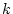
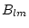

This program calculates total and partial density of states (DOS) by means of the modified tetrahedron method (Blöchl et al 1994). It uses the partial charges in case.qtl generated by lapw2 (switch QTL) and generates the DOS in states/Ry (files case.dos1/2/3) and in states/eV (with respect to the Fermi energy; files case.dos1/2/3ev). In spin-polarized calculations the DOS is given in states/Ry/spin (or states/eV/spin).
Please note: The total DOS is equal to the sum over the atoms of the total-atomic DOS (inside spheres) and the interstitial-DOS. (Thus in the total-atomic DOS the ``multiplicity'' of an atom is considered). On the other hand, in the partial (lm-like) DOS the multiplicity is not considered and one obtains the total-atomic DOS as a sum over all partial DOS times the multiplicity.
The ``m-decomposed'' DOS (e.g. ) is given with respect to the local coordinate system for each atom as defined by the local rotation matrix (see Appendix A).
It is strongly recommended that you use ``Run Programs  Tasks
Tasks  Density of States'' from w2web.
Density of States'' from w2web.
The program tetra is executed by invoking the command:
tetra tetra.def or x tetra [-up|dn]
The following parameters are listed in file param.inc:
| MG | max. number of DOS cases (usually 21) |
| LXDOS | usually 1, except for ``cross-DOS'' when using TELNES.2 = 3 |
An example is given below:
------------------ top of file: case.int ------------------
TiO2 # Title
-1.000 0.00250 1.200 0.003 # EMIN, DE, EMAX for DOS, GAUSS-Broad
7 # NUMBER OF DOS-CASES
0 1 tot # jatom, doscase, description
1 2 Ti-s
1 3 Ti-p
1 4 Ti-px
1 5 Ti-py
1 6 Ti-pz
2 1 O-tot
------------------- bottom of file ------------------------
Interpretive comments on this file are as follows:
| emin, delta, emax | specifies the energy mesh (in Ry) where the DOS is calculated. (emin should be set slightly below the lowest valence band; emax will be checked against the lowest energy of the highest band in case.qtl, and set to the minimum of these two values; delta is the energy increment. | |
| broad | Gauss-broadening factor. Must be greater than delta to have any effect. |
| ndos | specifies the number of DOS cases to be calculated. It should be at least 1 and can get up to 21. The corresponding output is written in groups of 7 to respective case.dosX files |
| jatom | specifies for which atom the DOS is calculated. 0 means total DOS, means DOS in the interstitial, where is the number of inequivalent atoms. When spin-orbit is included, gives total spin-up/dn DOS in a spinpolarized SO calculation, but is meaningless in a non-spinpolarized SO case. | |
| jcol | specifies the column to be used in the respective QTL-file. 1 means total, 2 ...s, 3 ...p, ...The further assignment depends on the value of ISPLIT set in case.struct (see sec. 4.3); the respective description can be found in the header of case.qtl. | |
| description | text used for further identification. |
This program was contributed by:
qtl creates the input for calculating total density of states,
spin projected densities of
states and densities of states projected on an arbitrary basis of a
given  -subshell of any atom (including the relativistic basis)
using tetra. For example it supports calculations of ``
-subshell of any atom (including the relativistic basis)
using tetra. For example it supports calculations of `` ''
or ``
''
or `` '' DOS or an ``approximate /'' splitting in a distorted
structure.
The calculation is based on the spectral decomposition of a density matrix
on a given atomic site and its transformation to the required basis.
There are three types of input, which determine the results of the program:
'' DOS or an ``approximate /'' splitting in a distorted
structure.
The calculation is based on the spectral decomposition of a density matrix
on a given atomic site and its transformation to the required basis.
There are three types of input, which determine the results of the program:
a) the ordinary input file described below,
b) the unitary transformation matrix from the standard -basis to the required one. For the most common bases (e.g. , , or ) these matrices are supplied with the code in $WIENROOT/SRC_templates/case.cf_* and must be copied to case.cf$iatom . For less common cases these must be generated by hand.
c) the proper setting of the local rotation matrix in the case.struct
file, which
may be different from the setting for the scf calculation. In the special
case of projected densities of states the local  -axis must coincide with
the magnetization direction defined in case.inso. This is not done automatically but
a message is written in the output together with the spin coordinate matrix.
-axis must coincide with
the magnetization direction defined in case.inso. This is not done automatically but
a message is written in the output together with the spin coordinate matrix.
qtl can use ``parallel'' vector-files and the output is written to case.qtl$iatom, which is used as an input for tetra.
The program qtl is executed by invoking the command:
x qtl [ -up/dn -so -p ] or
qtl qtl.def
| LMAX | highest l of wave function inside sphere (consistent with lapw1) |
| LABC | highest l of wave function inside sphere where SO is considered |
| LOMAX | max l for local orbital basis |
| NRAD | number of radial mesh points |
A sample input for case.inq is given below.
------------------ top of file: case.inq -------------------- FULL (SUMA,SPIN,TOTA) DOSYM (NOSYM) 0.0 1.2 Emin, Emax 0.768 Fermi energy 2 number of atoms for which density matrix is calculated 1 2 index of 1st atom, L 4 3 ------------------- bottom of file ------------------------
Interpretive comments on this file are as follows:
| FULL | all components of |
|
| SUMA | only sums defined by stars in the case.cf$n file calculated | |
| SPIN | projections of total DOS on up/dn subspaces for the case of a calculation with SOC | |
| TOTA | shortcut for calculating total DOS only. |
| DOSYM | standard option | |
| NOSYM | symmetrization switched off. Allowed only in special cases. |
| emin,emax | energy window |
| ef | Fermi energy |
| natom | number of atom for which projected DOS is calculated |
| iatom | index of atom for which projected DOS should be calculated | |
| l | l-value for which projected DOS should be calculated |
This program generates an energy bandstructure plot (postscript file case.spaghetti_ps and xmgrace file case.bands.agr) using the eigenvalues printed in case.output1 or case.outputso. Using the SCF potentials one runs x lapw1 -band with a special k-mesh along some high-symmetry lines (some sample inputs can be found in SRC_templates/*.klist or you create your own k-mesh using Xcrysden). As an option, one can emphasize the character of the bands by additionally supplying corresponding partial charges (file case.qtl which can be obtained using x lapw2 -qtl -band , see 7.5). This will be called ``band-character plotting`` below, in which each energy is drawn by a circle whose radius is proportional to the specified character of that state. It allows to analyze the character of bands (see also figures 3.15 and 3.16).
The file case.bands.agr can be opened directly with xmgrace. Within xmgrace, all features of the plot, such as the plot range, the plot size, line properties (style, thickness and color), axis properties, labels, etc. can easily be changed by either using the menu (submenus of the "Plot" menu) or double-klicking on the corresponding part of the figure. The size of the characters for a ``band-character plot`` can be changed in the menu "Plot/Graph appearance/Z normalization". The figures can directly be printed or exported in eps, jpg, png and other formats, via the menus "File/Print setup" and "File/Print".
C.Persson has modified this program and it allows now also to draw connected lines. For this purpose it uses the irreducible representations (from file case.irrep produced by program irrep together with a table of ``compatibility relations'' to decide which points should be connected (non-crossing rule !). (Note: The latter may not be complete leading to incorrect connections between high symmetry points and neighboring points in the BZ. Please inform us of such cases)
It is strongly recommended that you use ``Run Programs  Tasks
Tasks  Bandstructure'' from w2web.
Bandstructure'' from w2web.
The program spaghetti is executed by invoking the command:
spaghetti spaghetti.def or x spaghetti [-up|dn] [-so] [-p]
The -p switch directs spaghetti to use the case.output1_* files of a k-point parallel lapw1.
An example is given below:
----------------- top of file: case.insp ------------------- ### Figure configuration 5.0 3.0 # paper offset of plot 10.0 15.0 # xsize,ysize [cm] 1.0 4 # major ticks, minor ticks 1.0 1 # character height, font switch 1.1 2 4 # line width, line switch, color switch ### Data configuration -25.0 15.0 2 # energy range, energy switch (1:Ry, 2:eV) 1 0.74250 # Fermi switch, Fermi-level (in Ry units) 1 999 # number of bands for heavier plotting 1,1 0 1 0.02 # jatom, jtype, size of heavier plotting ------------------- bottom of file ------------------------for ``character plotting``
Interpretive comments on this file are as follows:
| test | line must start with '###'. Begin of figure description. This tests also if you use the new input (different from WIEN97 or early WIEN2k versions) |
| xoffset | x offset (in cm) of origin of plot | |
| yoffset | y offset (in cm) of origin of plot |
| xsize | plotsize in x direction (cm) | |
| ysize | plotsize in y direction (cm) |
| eincr | energy increment where y-axis labels are printed (major ticks) | |
| mtick | number of minor ticks of y-axis |
| charh | scaling factor for size of labels | |
| font | 0 | no text |
| 1 | Times and Symbol | |
| 2 | Times,Times-Italic and Symbol | |
| 3 | Helvetica, Symbol, and Helvetica-Italic | |
| 4 | include your own fonts in defins.f |
| linew | line width | |
| ilin | 0 | dots or open circles (WIEN97 style) |
| 1 | lines | |
| 2 | lines and open circles | |
| 3 | lines and filled circles | |
| icol | 0 | black |
| 1 | one-color plot | |
| 2 | three-color plot | |
| 3 | multi-color plot | |
| 4 | multi-color plot,one color for each irred. representation |
| test | line must start with '###'. Begin of data description. |
| emin | energy minimum of plot | |
| emax | energy maximum of plot | |
| iunits | ||
| 1 | energies in Ry (internal scale) | |
| 2 | energies in eV with respect to |
| iferm | 0 | no line at EF |
| 1 | solid line at EF | |
| 2 | dashed line at EF | |
| 3 | dotted line at EF | |
| efermi | Fermi energy (Ry); can be found in the respective
case.scf file. If set to 999., |
| nband1, nband2 | lower and upper band index for bands which should show ``band-character plotting`` (if case.qtl is present and the proper switch is set, see below). In addition the corresponding x and y coordinates are written to file case.spaghetti_ene (which can be used for plotting with an external xy-plotting program). |
| jatom | If a case.qtl file is present, jatom indicates the atom whose character (selected by jcol) is used for ``band-character plotting`` (dots are replaced by circles with radii proportional to the corresponding weight). If set to zero or if case.qtl is not present, ``band-character plotting`` does not occur. | |
| jcol | specifies the column to be used in the respective QTL-file. 1 means total, 2 ...s, 3 ...p, ...The further assignment depends on the value of ISPLIT set in case.struct. (ignored for jatom=0). The description can be found in the header of case.qtl. | |
| jsize | size factor for radii of circles used in ``band-character plotting'' |
This program was contributed by:
![\framebox{
\parbox[c]{12cm}{
Clas Persson \\
Condensed Matter Theory Group,...
...ilinglist. If necessary, we will communicate
the problem to the authors.}
}
}](img232.png)
This program determines the irreducible representation for each eigenvalue and all your k-points. It is in particular usefull to analyse energy bands and their connectivity.
You need a valid vector file, but no other input is required. The output can be found in case.outputir and case.irrep. For nonmagnetic SO calculations you must set IPR=1 in case.inso.
The output of this program is needed when you want to draw bandstructures with connected lines (instead of ``dots'').
It will not work in cases of non-symmorphic spacegroups AND k-points at the surface of the BZ. See also $WIENROOT/SRC_irrep/README.
The program irrep is executed by invoking the command:
irrep [up/dn]irrep.def or x irrep [-so -up/dn ]
The following parameters are listend in file param.inc:
| LOMAX | max. no. of local orbital. should be consistent with lapw1 and lapwso |
| NLOAT | number of different types of LOs |
| MSTP | max. step to describe k as a fraction |
| MAXDG | max. no. of degenerate eigenfunctions |
| MAXIRDG | max. no. of degenerate irr. representations |
| FLMAX | size of flag (FL) array (should be 4) |
| MAXIR | max. no. of irreducible representations |
| NSYM | max. no. of symmetry operations |
| TOLDG | min. energy deviation of degenerate states, in units of Rydberg |
This program calculates X-ray structure factors from the charge density by Fourier transformation.
You have to specify interactively valence or total charge density (because of the different normalization of case.clmsum and case.clmval) and a maximum value.
The program lapw3 is executed by invoking the command:
lapw3 lapw3.def or lapw3c lapw3.def or x lapw3 [-c ]
The following parameters are listend in file param.inc_r or param.inc_c :
| LMAX2 | highest L in in LM expansion of charge and potential |
| NCOM | number of LM terms in density |
| NRAD | number of radial mesh points |
This program generates the charge density (or the potential) in a specified plane of the crystal on a two dimensional grid which can be used for plotting with an external contour line program of your choice. Depending on the input files one can generate valence (case.clmval) or difference densities (i.e. crystalline minus superposed atomic densities) using the additional file (case.sigma). In spinpolarized cases one can produce up-, dn- and total densities but also spin densities (difference up-dn). It is also possible to plot total densities (case.clmsum), Coulomb (case.vcoul), exchange-correlation (case.r2v) or total (case.vtotal) potentials, but in those cases the file lapw5.def has to be edited and you must replace case.clmval by the respective filename. The file case.rho contains in the first line
npx, npy, xlength, ylength;and then the density (potential) written with:
write(21,11) ((charge(i,j),j=1,npy),i=1,npx)
11 format(5e16.8)
It is strongly recommended that you use ``Run Programs  Tasks
Tasks  Electron density plots'' from w2web, see the TiC example in Fig.3.6 .
Electron density plots'' from w2web, see the TiC example in Fig.3.6 .
The program lapw5 is executed by invoking the command:
lapw5 lapw5.def or lapw5c lapw5.def or x lapw5 [-c -up|dn]
The following parameters are listend in file param.inc:
| LMAX2 | highest L in in LM expansion of charge and potential |
| NCOM | number of LM terms in density |
| NRAD | number of radial mesh points |
| NPT00 | number of radial mesh points beyond RMT |
| NSYM | order of point group |
An example is given below. You may want to use XCRYSDEN by T.Kokalj to generate this file (see sect. 9.17.2).
---------------- top of file: case.in5 -------------------- 0 0 0 1 # origin of plot: x,y,z,denominator 1 1 0 1 # x-end of plot 0 0 1 2 # y-end of plot 3 3 3 # x,y,z nshells (of unit cells) 100 100 # nx,ny RHO # RHO/DIFF/OVER; ADD/SUB or blank ANG VAL NODEBUG # ANG/ATU, VAL/TOT, DEBUG/NODEBUG NONORTHO # optional line: ORTHO|NONORTHO ------------------- bottom of file ------------------------
Interpretive comments on this file are as follows:
| ix,iy,iz,idv | The plane and section of the plot is specified by three points in the unit cell, an origin of the plot, an x-end and an y-end. The first line specifies the coordinates of the origin, where x=ix/idv, ...in units of the lattice vectors (except fc, bc and c lattices, where the lattice vectors of the conventional cell are used) |
| ix,iy,iz,idv | coordinates of x-end |
| ix,iy,iz,idv | coordinates of y-end (The two directions x and
y must be orthogonal to each other unless NONORTHO is selected).
Since it is quite difficult to specify those 3 points for a
rhombohedral lattice, an auxiliary program rhomb_in5 is
provided, which creates those points when you specify 3 atomic
positions which will define your plane. You can find this program
using ``Run Programs |
| nxsh, nysh, nzsh | specifies the number of nearest neighbor cells (in x,y,z direction) where atomic positions are generated (needs to be increased for very large plot sections, otherwise some ``atoms'' are not found in the plot) |
| npx, npy | specifies number of grid points in plot. npy=1 produces a file case.rho_onedim containing the distance r (from the origin) and the respective density, which can be used in a standard x-y plotting program. |
| switch | RHO | charge (or potential) plots, no atomic density is used (regular case) |
| DIFF | difference density plot (crystalline - superposed atomic densities), needs file case.sigma (which is generated with LSTART, see section 6.4) | |
| OVER | superposition of atomic densities, needs file case.sigma | |
| addsub | NO | (or blank field): use only the file from unit 9 |
| ADD | adds densities from units 9 and 11 (if present), e.g. to add spin-up and down densities. | |
| SUB | subtracts density of unit 11 (if present) from that of unit 9 (e.g. for the spin-density, which is the difference between spin-up and down densities). |
| iunits | ATU | density (potential) in atomic units e/ (or Ry) |
| ANG | density in e/ (do not use this option for potentials) | |
| cnorm | determines normalization factor | |
| VAL | used for files case.clmval, r2v, vcoul, vtotal | |
| TOT | used for files case.clmsum | |
| debug | DEBU | debugging information is printed (large output) |
| noorth1 | ORTHO | (default) enforces directions to be orthogonal |
| NONORT | directions can be arbitrary; use this option only if your plotting program supports non orthogonal plots (e.g. for XCRYSDENS). |
In order to plot total densities or potentials (see cnorm as above) you have to create lapw5.def using x lapw5 -d, then edit lapw5.def and insert proper filenames (case.clmval, case.r2v, case.vcoul, case.vtotal) for units 9 and 11, and finally run lapw5 lapw5.def.
This program was contributed by:
This program analyses the topology of the electron density according to Bader's ``Atoms in molecules'' theory. For more information see Bader 2001 and Sofo and Fuhr 2001.
The original code has been significantly speeded-up by L.Marks (L-marks@northwestern.edu). There are some new optional keywords in the input (usually not needed, more for testing) and also more debugging output. All changes are described in $WIENROOT/SRC_aim/Notes.txt.
Basically it performs two different tasks, namely searching for ``critical points'' (CP) and/or determination of the atomic basins with an integration of the respective charge density.
It is important that you provide a ``good'' charge density, i.e. one which is well converged with respect to LMMAX in the CLM-expansion (you may have to increase the default LM-list to LM=8 or 10) and with as little ``core-leakage'' as possible (see lstart, sect. 6.4), otherwise discontinuities appear at the sphere boundary.
The program aim is executed by invoking the command:
aim aim.def or aimc aim.def or x aim [-c ]
The following parameters are listed in file param.inc:
| LMAX2 | highest L in in LM expansion of charge and potential |
| NRAD | number of radial mesh points |
| NSYM | order of point group |
The input file contains ``SWITCHES'', followed by the necessary parameters until an END-switch has been reached.
Examples for ``critical-point'' searches and ``charge-integration'' are given below:
---------------- top of file: case.inaim -------------------- CRIT 1 # index of the atom (counting multiplicity) ALL # TWO/THRE/ALL /FOUR 3 3 3 # x,y,z nshells (of unit cells) END ------------------- bottom of file ------------------------
Interpretive comments on this file are as follows:
| CRIT | Keyword to calculate critical points | |
| iatom | index of the atom from where the search should be started. This count includes the multiplicity, i.e. if the first atom has MULT=2, the ``second atom'' has iatom=3 (Do not use simply the atom-numbers from case.struct) |
| KEY | TWO, THRE, ALL, or FOUR | |
| defines the starting point for the CP search to be in the middle of 2, 3 or 4 atoms. ALL combines option TWO and THRE together. |
| specifies the number of nearest neighbor cells (in x,y,z direction) where atomic positions are generated. |
| END | specifies end of job. |
In case.outputaim the critical points are marked with a label :PC
:PC a1 a2 a3 l1 l2 l3 c lap rho iat1 dist1 iat2 dist2where a1,a2,a3 are the coordinates of the CP in lattice vectors; l1 l2 l3 are the eigenvalues of the Hessian at the CP; c is the character of the CP (-3, -1, 1 or 3); lap is the Laplacian of the density at the CP (lap=l1+l2+l3) and rho is the density at the CP (all in atomic units). In case of a bond critical point (c=-1) also the nearest distances (dist1, dist2) to the two nearest atoms (iat1, iat2) are given.
For convenience run extractaim_lapw case.outputaim (see 5.2.9)
and get in the file
critical_points_ang a comprehensive list of the CP (sorted and unique)
with all values given in
 (instead of bohr).
(instead of bohr).
---------------- top of file: case.inaim -------------------- SURF 3 atom in center of surface (including MULT) 40 0.0 3.1415926536 theta, 40 points, from zero to pi 40 -0.7853981634 2.3561944902 phi 0.07 0.8 2 step along gradient line, rmin, check 1.65 0.1 initial R for search, step (a.u) 3 3 3 nshell IRHO "INTEGRATE" rho WEIT WEIT (surface weights from case.surf), NOWEIT 30 30 radial points outside min(RMIN,RMT)¨ END ------------------- bottom of file ------------------------
Interpretive comments on this file are as follows:
| SURF | Keyword to calculate the Bader surface. |
| iatom | index of the atom from where the search should be started. This count includes the multiplicity, i.e. if the first atom has MULT=2, the ``second atom'' has iatom=3 (Do not use simply the atom-numbers from case.struct) |
| ntheta | number of theta directions for the surface determination. This (and nphi) determines the accuracy (and computing time). | |
| thmin | starting angle for theta | |
| thmax | ending angle for theta. If you have higher symmetry, you can change the angles thmin=0, thmax= and use only the ``irreducible'' part, i.e. when you have a mirror plane normal to z (see case.outputs), restrict thmax to . |
| nphi | number of phi directions for the surface determination | |
| phimin | starting angle | |
| phimax | ending angle. (see comments for theta to reduce phi from the full integration). |
| h0 | step in real space to follow the gradient ( 0.1) | |
| frmin | defines the radius, for which the routine assumes that the search path has entered an atom, given as ``rmin = frmin * rmt'' ( 0.8-1.0) | |
| nstep | number of steps between testing the position being inside or outside of the surface ( 2-8). |
| r0 | initial radius for the search of the surface radius ( 1.5) | |
| dr0 | step for the search of the surface radius( 0.1) |
| specifies the number of nearest neighbor cells (in x,y,z direction) where atomic positions are generated. |
| IRHO | integrate function on ``unit 9'' (usually case.clmsum) inside previously defined surface (stored in case.surf). |
| WEIT | specifies the use of weights in case.surf. |
| npt | specifies number of points for radial integration outside the MT ( 30) |
| END | specifies end of job. |
The program lapw7 generates wave function data on spatial grids for a given set of -points and electronic bands. lapw7 uses the wave function information stored in case.vector (or in reduced (filtered) form in case.vectorf which can be obtained from case.vector by running the program filtvec). Depending on the options set in the input file case.in7(c) one can generate the real or imaginary part of the wave functions, it's modulus (absolute value) or argument, or the complex wave function itself. For scalar-relativistic calculations both the large and the small component of the wave functions can be generated (only one at a time). The wave functions are generated on a grid which is to be specified in the input file(s). The grid can either be any arbitrary list of points (to be specified free-formatted in a separate file case.grid) or any -dimensional grid (). The operating mode and grid parameters are specified in the input file case.in7(c). As output lapw7 writes the specified wave function data for further processing - e.g. for plotting the wave functions with some graphical tools such as gnuplot - in raw format to case.psink. For quick inspection, a subset of this data is echoed to the standard output file case.outputf (the amount of data can be controlled in the input). In case, lapw7 is called many times for one and the same wave function, program overhead can be reduced, by first storing the atomic augmentation coefficients ,  (and ) to a binary file case.abc. For the spin-polarized case two different calculations have to be performed using either the spin-up or the spin-down wave function data as input.
It should be easy to run lapw7 in parallel mode, and/or to apply it to wave function data obtained by a spin-orbit interaction calculation. None of these options have been implemented so far. Also, lapw7 has not yet been adapted for w2web.
Please note: lapw7 requires an LAPW basis set and does not work with APW+lo yet.
The program lapw7 is executed by invoking the command:
lapw7 lapw7.def or lapw7c lapw7.def or x lapw7 [-c] [-up|dn] [-sel]
With the -sel option lapw7 expects data from the reduced (filtered) wave function file case.vectorf, otherwise the standard wave function file case.vector is used. The reduced vector file case.vectorf is assumed to resist in the current working directory, while the standard vector file case.vector (which may become quite large) is looked for in the WIEN scratch directory. For details see lapw7.def.
The following parameters are listed in file param.inc_(r/c):
| NRAD | number of radial mesh points | |
| NSYM | order of point group | |
| LMAX7 | maximum L value used for plane wave augmentation | |
| LOMAX | maximum L value used for local orbitals |
The meaning of LMAX7 is the same as that of LMAX2 in lapw2 and that of LMAX-1 in lapw1. Rather than being an upper bound it directly defines the number of augmentation functions to be used. It may be set different to LMAX2 in lapw2 or LMAX-1 in lapw1, but it must not exceed the latter one. Note that, the degree of continuity of the wave functions across the boundary of the muffin tin sphere is quite sensitive to the choice of the parameter LMAX7. A value of 8 for LMAX7 turned out to be a good compromise.
A sample input is given below. It shows how to plot a set of wave functions on a 2-dim. grid.
| - - - - - - - - - - - - - - - - - top of file - - - - - - - - - - - - - - - - - | ||
| 2D ORTHO | # mode O(RTHOGONAL)|N(ON-ORTHOGONAL) | |
| 0 0 0 2 | # x, y, z, divisor of origin | |
| 3 3 0 2 | # x, y, z, divisor of x-end | |
| 0 0 3 2 | # x, y, z, divisor of y-end | |
| 141 101 35 25 | # grid points and echo increments | |
| NO | # DEP(HASING)|NO (POST-PROCESSING) | |
| RE ANG LARGE | # switch ANG|ATU|AU LARGE|SMALL | |
| 1 0 | # k-point, band index | |
| - - - - - - - - - - - - - - - - - end of file - - - - - - - - - - - - - - - - - | ||
Interpretive comments on this file are as follows.
| line 1: | format(A3,A1) | ||
| mode flag | |||
| mode | the type of grid to be used | ||
| ANY | An arbitrary list of grid points is used. | ||
| 0D, 1D, 2D, or 3D | An -dim. grid of points is used. . | ||
| flag | orthogonality checking flag (for -dim. grids only) | ||
| N | The axes of the -dim. grid are allowed to be non-orthogonal. | ||
| O or | The axes of the -dim. grid have to be mutual orthogonal. | ||
| line 2: | free format -- (for -dim. grids only) | ||
| ix iy iz idiv | Coordinates of origin of the grid, where x=ix/idv etc. in units of the conventional lattice vectors. | ||
| line 3: | free format -- (for -dim. grids with only) | ||
| ix iy iz idiv | Coordinates of the end points of each grid axis.
This input line has to be repeated -times. |
||
| line 4: | free format -- (not for 0-dim. grids) | ||
| np ... npo ... | In case of an -dim. grid, first the number of
grid points along each axis, and then the increments for the output
echo for each axis. Zero increments means that only the first and
last point on each axis are taken. In case of an arbitrary list of
grid points, the total number of grid points and the increment for
the output echo. Again a zero increments means that only the first
and last grid point are taken. Hence, for -dim. grids, altogether,
|
||
| line 5: | format(A3) | ||
| tool | post-processing of the wave functions | ||
| DEP | Each wave function is multiplied by a complex phase factor to align it (as most as possible) along the real axis (the so-called DEP(hasing) option). | ||
| NO | No post-processing is applied to the wave functions. | ||
| line 6: | format(A3,1X,A3,1X,A5) | ||
| switch iunit whpsi | |||
| switch | the type of wave function data to generate | ||
| RE | The real part of the wave functions is evaluated. | ||
| IM | The imaginary part of the wave functions is evaluated. | ||
| ABS | The absolute value of the wave functions is evaluated. | ||
| ARG | The argument the wave functions in the complex plane is evaluated. | ||
| PSI | The complex wave functions are evaluated. | ||
| iunit | the physical units for wave function output | ||
| ANG | Å units are used for the wave functions. | ||
| AU or ATU | Atomic units are used for the wave functions. | ||
| whpsi | the relativistic component to be evaluated | ||
| LARGE | The large relativistic component of wave function is evaluated. | ||
| SMALL | The small relativistic component of wave function is evaluated. | ||
| line 7: | free format | ||
| iskpt iseig | |||
| iskpt | The -points for which wave functions are to be evaluated. Even if the wave function information is read from case.vectorf, iskpt refers to the index of the -point in the original case.vector file! If iskpt is set to zero, all -points in case.vector(f) are considered. | ||
| iseig | The band index for which wave functions are to be evaluated. Even if the wave function information is read from case.vectorf, iseig refers to the band index in the original case.vector file! If iseig is set to zero, all bands (for the selected -point(s)) which can found in case.vector(f) are considered. | ||
| line 8: | format(A4) -- this line is optional | ||
| handle | augmentation coefficient control flag | ||
| SAVE or STOR(E) | Augmentation coefficients are stored in case.abc). No wave function data is generated in this case. This option is only allowed if a single wave function is selected in the previous input line. | ||
| READ or REPL(OT) | Previously stored augmentation coefficients are read in (from case.abc). This option is only allowed if the same single wave function as the one who's augmentation coefficients are stored in case.abc is selected in the previous input line. | ||
| anything else | Augmentation coefficients are generated from the wave function information in case.vector(f). | ||
This program was contributed by:
The program filtvec reduces the information stored in case.vector files by filtering out a user-specified selection of wave functions. Either a fixed set of band indices can be selected which is used for all selected -points (global selection mode), or the band indices can be selected individually for each selected -point (individual selection mode). The complete wave function and band structure information for the selected -points and bands is transferred to case.vectorf. The information on all other wave functions in the original file is discarded. The structure of the generated case.vectorf file is identical to that of the original case.vector file. Hence, it should be possible to use case.vectorf as substitutes for case.vector anywhere in the WIEN program package. (This has only been tested for lapw7.and filtvec.) To filter vector files from spin-polarized calculations, filtvec has to be run separately for both the spin-up and the spin-down files.
filtvec has not yet been adapted for w2web.
The program filtvec is executed by invoking the command:
filtvec filtvec.def or filtvecc filtvec.def or x filtvec [-c] [-up|dn]
In accordance with the file handling for lapw1 and lapw7 the input vector file case.vector is assumed to be located in the WIEN scratch directory, while the reduced output vector file case.vectorf is written to the current working directory. See filtvec.def for details.
The following parameters are listed in file param.inc_(r/c):
| NKPT | number of -points | |
| LMAX | maximum number of L values used (as in lapw1) | |
| LOMAX | maximum L value used for local orbitals (as in lapw1) |
The parameter LMAX and LOMAX must be set precisely as in lapw1; all other parameters must not be chosen smaller than the corresponding parameters in lapw1.
Two examples are given below. The first uses global selection mode; the
second individual selection mode.
I. Global Selection Mode
| - - - - - - - - - - - - - - - - - top of file - - - - - - - - - - - - - - - - - | |||
| 3 | 1 17 33 | # number of k-points, k-points | |
| 2 | 11 -18 | # number of bands, band indices | |
| - - - - - - - - - - - - - - - - - end of file - - - - - - - - - - - - - - - - - | |||
Interpretive comments on this file are as follows.
| line 1: | free format | |
| kmax ik(1) ... ik(kmax) | Number of -point list items, followed by the list items themselves. Positive list items mean selection of the -point with the specified index; negative list items mean selection of a range of -points with indices running from the previous list item to the absolute value of the current one. E.g. the sequence 2 -5 stands for 2, 3, 4, and 5. | |
| line 2: | free format | |
| nmax ie(1) ... ie(nmax) | Number of band index items, followed by the list items themselves. Again, positive list items mean selection of a single band index; negative list items mean selection of a range of band indices. | |
II. Individual Selection Mode
| - - - - - - - - - - - - - - - - - top of file - - - - - - - - - - - - - - - - - | ||||
| 2 : | # number of k-points | |||
| 17 | 4 | 11 13 15 17 | # k-point, number of bands, band indices | |
| 33 | 3 | 11 -14 18 | # k-point, number of bands, band indices | |
| - - - - - - - - - - - - - - - - - end of file - - - - - - - - - - - - - - - - - | ||||
Interpretive comments on this file are as follows.
| line 1: | free format | |
| kmax | the number of individual -points to be selected. This number must be followed by any text, e.g. 'SELECTIONS' or simply ':', to indicate individual selection mode. | |
| line 2: | free format | |
| ik nmax ie(1) ... ie(nmax) | First the index of the selected -point,
then the number of band index items, followed by the list items for
the current -point themselves. Positive list items mean
selection of the band with the specified index; negative list items
mean selection of a range of band indices running from the previous
list item to the absolute value of the current one. E.g. the
sequence 3 -7 stands for 3, 4, 5, and 7.
This input line has to be repeated kmax-times. |
|
This program calculates near edge structure of x-ray absorption or emission spectra according to the formalism described by Neckel et al.75, Schwarz et al. 79 and 80. For a brief introduction see below. It uses the partial charges in case.qtl. This file must be generated separately using lapw2. Partial densities of states in case.dos1ev are generated using the tetra program. Spectra are calculated for the dipole allowed transitions, generating matrix elements, which are multiplied with a radial transition probability and the partial densities of states. Unbroadened spectra are found in the file case.txspec, broadened spectra in the file case.xspec. Other generated files are: case.m1 (matrix element for the selection rule L+1) and case.m2 (matrix element for the selection rule L-1) and case.corewfx (radial function of the core state). The calculation is done with several individual programs (initxspec, tetra, txspec, and lorentz). which are linked together with the c-shell script xspec.
It is strongly recommended that you use ``Run Programs  Tasks
Tasks  X-ray spectra'' from w2web.
X-ray spectra'' from w2web.
xspec xspec.def or x xspec [-up|-dn]
The program initxspec is executed by invoking the command:
initxspec xspec.def or x initxspec [-up|-dn]
The program tetra is executed by invoking the command:
tetra tetra.def or x tetra [-up|-dn]
The program txspec is executed by invoking the command:
txspec xspec.def or x txspec [-up|-dn]
The program lorentz is executed by invoking the command:
lorentz xspec.def or x lorentz [-up|-dn]
The following dimensioning parameters are collected in the files param.inc of SRC_txspec and SRC_lorentz:
| IEMAX0 | maximum number of energy steps in the spectrum (SRC_lorentz) |
| NRAD | number of radial mesh points |
| LMAX | highest l+1 in basis function inside sphere (consistent with input in case.in1) |
---------------- top of file: nbc.inxs -------------------- NbC: C K (Title) 2 (number of inequivalent atom) 1 (n core) 0 (l core) 0,0.5,0.5 (split, int1, int2) -20,0.1,3 (EMIN,DE,EMAX in eV) EMIS (type of spectrum, EMIS or ABS) 0.35 (S) 0.25 (gamma0) 0.3 (W) AUTO (generate band ranges AUTOmatically or MANually -7.21 (E0 in eV) -10.04 (E1 in eV) -13.37 (E2 in eV) ------------------- bottom of file ------------------------
---------------- top of file: nbc.inxs -------------------- NbC: C K (Title) 2 (number of inequivalent atom) 1 (n core) 0 (l core) 0,0.5,0.5 (split, int1, int2) -2,0.1,30 (EMIN,DE,EMAX in eV) ABS (type of spectrum) 1.0 (S) ------------------- bottom of file ------------------------
Interpretive comments on these files are as follows.
| TITLE | Title |
| NATO | Number of the selected atom (in case.struct file) |
| NC | principle quantum number of the core state |
| LC | azimuthal quantum number of the core state |
|
| SPLIT, INT1, INT2 | split in eV between e.g. and
|
| EMIN, DE, EMAX | minimum energy, energy increment for spectrum, maximum energy; all energies are in eV and with respect to the Fermi level | |
| EMIN and EMAX are only used as limits if the energy range created by the lapw2 calculation (using the QTL switch) is greater than the selected range. |
| TYPE | EMIS | X-ray emission spectrum |
| ABS | X-ray absorption spectrum (default) |
| S | broadening parameter for the spectrometer broadening. For absorption spectra S includes both experimental and core broadening. Set S to zero for no broadening. |
| GAMMA0 | broadening parameter for the life-time broadening of the core states. Set GAMMA0 to zero to avoid lifetime broadening of the core states. |
| W | broadening parameter for the life-time broadening of valence states. Set W to zero to avoid lifetime broadening of the valence states. |
| BANDRA | ||
| AUTO | band ranges are determined AUTOmatically (default) | |
| MAN | band ranges have to be entered MANually |
| E0 | Emission spectra: onset energy for broadening, E0, generated automatically if AUTO was set in line 10 | |
| Absorption spectra: not used |
| E1 | Emission spectra: onset energy for broadening, E1, generated automatically if AUTO was set in line 10 | |
| Absorption spectra: not used |
| E2 | Emission spectra: onset energy for broadening, E2, generated automatically if AUTO was set in line 10 | |
| Absorption spectra: not used |
This program was contributed by:
The TELNES.2 program calculates the double differential scattering cross section (DDSCS) on a grid of energy loss values and scattering impulse vectors. This double differential cross section is integrated to yield a (single) differential cross section, which is written to file. The cross section may be differential w.r.t. energy (ELNES integrated over Q) or w.r.t. to impulse transfer (ELNES integrated over E). The latter case allows to study the angular behaviour of scattering.
Generally, the DDSCS is given by Jorissen, Luitz, Hébert, Ultramicroscopy 2005. This formula takes into account the relative orientation between sample and beam. If this is not necessary (because the crystal is isotropic, or the sample is polycrystalline), the formula may be integrated over 4, giving a much simpler equation. Both equations are implemented in ELNES.
For the calculation of orientation sensitive spectra lapw2 must be compiled with the parameter LXDOS set to 3 and one must use a ``full k-mesh'', i.e. run kgen with only the identity operation in case.struct.
telnes2 telnes2.def or x telnes2 [-up|-dn]
ELNES needs one input file - case.innes. We recommend using InnesGen
 of w2web to create this input file in a clear and intuitive way. If you wish to manually edit the file, please refer to the following description.
of w2web to create this input file in a clear and intuitive way. If you wish to manually edit the file, please refer to the following description.
The file case.innes consists of two parts: a first block with required input, and a second block with optional input. In fact, the second part may be omitted altogether. The simplest input file looks like this:
Graphite C K edge of first atom. 1 (atom) 1, 0 (n, l core) 285 (E-Loss of 1st edge in eV) 300 (energy of the incident electrons in keV) 5.0 1.87 (collection semiangle, convergence semiangle, both in mrad) 5 3 (NR, NT, defining the integration mesh in the detector plane) 0.8 (spectrometer broadening in eV) END
This first part of the file is not formatted and contains the following information:
| line | value | explanation |
| 1 | `Graphite ...' | Title (of no consequence for the calculation) |
| 2 | 1 | Atom number as given in case.struct (the index which numbers inequivalent atoms) |
| 3 | 1 0 | main and orbital quantum number n and l of the core state; eg. 1 0 stands for 1 s |
| 4 | 285 | energy of the edge onset in eV (here for the C K edge) |
| 5 | 300 | beam energy in keV |
| 6 | 5.0 1.87 | detector collection semiangle and microscope convergence semiangle in mrad |
| 7 | 5 3 | parameters NR and NT which determine the mesh used for sampling the distribution of Q-vectors allowed by collection and convergence angles |
| 8 | 0.8 | spectrometer broadening FWHM in eV |
| 9 | END | keyword telling the program that there is no more input to read. Optional keywords and values must be inserted before this line! |
There are many more parameters that specify the calculation, most of which are set to reasonable default values. To change these defaults, or to use advanced parameters, add corresponding lines before the END keyword. We recommend using InnesGen
 of w2web to create this input file.
of w2web to create this input file.
To use of these advanced option you must
Although only the first four characters of the keyword are considered, I recommend using the full keyword for clarity.
Recognized keywords are :
OUTPUT n eg. : 1
Specifies how much output you'll get. n is an integer of value 0 (only basic output; default), 1 (medium output) or 2 (full output, including less useful and more technical information).
ATOMS n1 n2 eg. : 1 3In case.struct, the inequivalent atom number corresponds to a class of equivalent atoms. Equivalent positions n1 to n2 will contribute to the spectrum (default : sum over all atoms in the equivalency class). Since all equivalent atoms have identical electronic structure up to a symmetry operation, this will simply yield a prefactor *(n2-n1) for the orientation averaged spectrum, but as each equivalent atom has a different orientation w.r.t. the beam, this will change the shape of an orientation sensitive spectrum.
ENERGY GRID emin emax estep eg. : 0.0 25.0 0.02 (default : 0 15 0.05)The energy grid on which the spectrum is evaluated, starting from emin and going to emax in steps of estep. All values are in eV and are w.r.t. the Fermi energy == the threshold.
DETECTOR POSITION qx qy eg. : 0.5 0.5 (default : 0 0)
It is possible to place the detector not in the 000 direction but move it away from the incoming beam. Consider the center of the detector aperture as a point in a plane with the 000 spot as its origin; then qx, qy are the carthesian coordinates in mrad of this point.
MODUS m eg. : angles (default is energy)The scattering cross section is differential w.r.t. energy if m=energy and w.r.t. impuls transfer/scattering angle if m=angles.
SPLIT splitting energy eg. : 2.7
If the initial state has an orbital quantum number larger than 0, it will generate two superposed edges : one corresponding to  , and one corresponding to (eg., for the 2p initial state we have a L3 and a L2 edge). The splitting energy sets the energy separation of the two edges and should be given in eV (here, L3 is at the energy specified in the beginning of case.innes, and L2 is 2.7 eV higher).
By default (keyword omitted), the splitting energy is calculated by the program.
, and one corresponding to (eg., for the 2p initial state we have a L3 and a L2 edge). The splitting energy sets the energy separation of the two edges and should be given in eV (here, L3 is at the energy specified in the beginning of case.innes, and L2 is 2.7 eV higher).
By default (keyword omitted), the splitting energy is calculated by the program.
BRANCHING RATIO branching ratio eg. : 1.4
The branching ratio is a scaling factor (eg., here the ratio of intensities L3/L2 would be set to 1.4). By default (keyword omitted), the branching ratio is set to its statistical value of .
NONRELATIVISTICThis key tells the program not to use the relativistic corrections to the scattering cross section. This option allows to generate spectra identical to output of the old TELNES program. By default (much recommended!!), the relativistic corrections are used.
INITIALIZATION make_dos write_dos eg. N N (default : Y Y) make_rot.mat. write_rot.mat eg. Y N (default : Y Y)
TELNES.2 needs many ingredients for its calculations, and this key defines how it gets two ingredients : the (cross) density of states, and the rotation matrices (used for transforming Q-vectors from one atom to an equivalent atom). On each line, the first entry says whether or not the ingredient has to be calculated (Y : calculate; N : read from file), and the second entry says whether or not the ingredient has to be written to file (Y : write; N : don't write). If make_dos=Y, a file case.qtl must be present from which the dos will be calculated. If make_dos=N, then either a file case.dos or a file case.xdos containing the (x)dos must be present.
If make_rot.mat=N, a file case.rotij containg the rotation matrices must be present. If write_rot.mat=Y, a file case.rotij is written. If write_dos=Y, a file case.dos or case.xdos will be written. The calculation of the rotation matrices is computationally negligible, but if orientation sensitive spectra are calculated, it is recommended to write the xdos to file and not calculate it over and over again.
QGRID qmodus eg. L (U by default) (q0 eg. 0.05 (no default value) )
A collection angle and convergence angle allow scattering angles up to and a corresponding set of Q-vectors. This set (a disk of radius ) is sampled using a discrete mesh. Three types of meshes are implemented :
ORIENTATION SENSITIVE g1 g2 g3 (eg. 0.0 40.0 0.0) (no default value)
This key tells the program not to average over sample to beam orientations, but to use the particular sample to beam orientation defined by the three Euler angles (to be given in degrees). If the ORIENTATION SENSITIVE key is not set, the program will average over all orientations (this is the default behaviour).
SELECTION RULE type (eg. : q) (default : d)The formula for the ddscs contains an exponential factor in Q, which we expand using the Rayleigh expansion, and labeling the order of each term as lambda. This key allows to keep some terms and discard others. Possible settings for `type' are :
m : calculate monopole contribution only d : dipole only (this is default) q : quadrupole only o : octopole only n : no selection rule, calculate all transitions 0-3 : all transitions up to the specified value (eg., 1 means monopole + dipole)
Be aware that the availability of the DOS limits the possible transitions (WIEN2k gives us the DOS only up to l=3).
LSELECTION RULE type (eg. : q) (default : d)
Whereas the previous key selects transitions by the order of the interaction potential, this key selects them by the L-character of the final states. Possible settings for `type' are (the orbital momentum of the initial state being denoted with l):
m : L=l d : L=l +/- 1 q : L=l +/- 2 o : L=l +/- 3 n : no selection rule, calculate all transitions 0-3 : |L-l| <= type
This program was contributed by:
The broadening program can be used in conjunction with the TELNES.2 or the xspec program to broaden theoretical spectra by applying a lorentzian broadening for core and valence life times and a gaussian broadening for spectrometer broadening.
broadening broadening.def or x broadening
broadening needs one input file - case.inb. When running TELNES.2 this input file is automatically created from settings given in case.innes.
GaN ELNES 1 1 0 0.0 1.0 0.0 0.116 0.116 1 2.15000000000000 0.6 dummy 0.0 0.0 0.0
| line | value | explanation |
| 1 | `GaN ...' | Title (of no consequence for the calculation) |
| 2 | ELNES | ABS | EMIS | Type of input spectrum |
| 3 | NC C1 C2 | specification of input file: NC number of columns to read, C1 and C2 column to broaden (only in ``ELNES'' mode) |
| 4 | SPLIT XINT1 XINT2 | split energy, XINT1|2 relative intensities of spectra in C1 and C2 |
| 5 | GA GB | core hole lifetime of the two edges |
| 6 | W WSHIFT | W: type of valence broadening (1: linear with , 2: Muller like ), edge offset |
| 7 | S | Spectrometer broadening FWHM in eV |
| 8 | dummy | dummy keyword for compatibility with lorentz |
| 9-11 | E0, E1, E2 | quadratic energy dependent broadening (only used for type ELNES and EMIS when selecting valence broadening type W=2) |
This program generates a series of new struct files corresponding to different volumes, c/a ratios, or otherwise different lattice parameters (depending on your input choice) from an existing struct file (either case_initial.struct or case.struct). (When case_initial.struct is not present, it will be generated from the original case.struct.
Furthermore it produces a shell script optimize.job. You may modify this script and execute it. Further analysis of the results (at present only equilibrium volume or c/a ratio are supported in w2web) allows to find the corresponding equillibrium parameters (see Sec.5.3.1).
The program optimize is executed by invoking the command:
optimize optimize.def or x optimize
This package calculates elastic constants for cubic crystals. It is described in detail by the author in Charpin 2001.
The package is driven by three scripts:
This program is usually called from the script min_lapw and performs movements of the atomic positions according to the calculated forces (please read Sec. 5.3.2). It generates a new case.struct file which can be used in the next geometry/time step. Depending on the input options, mini helps to find the equilibrium positions of the atoms or performs a molecular dynamics simulation (which might take very long time).
For finding the equilibrium positions different methods are available. We recommend PORT, a ``reverse-communication trust-region Quasi-Newton method'' from the Port library (http://www.bell-labs.com/project/PORT/doc/port3doc.tar.gz, Gay 1983), which was implemented by L.D.Marks (L-marks@northwestern.edu, http://www.numis.northwestern.edu). Alternatively a sophisticated modified steepest-descent method and a damped Newton dynamics is also available.
The forces are read from a file case.finM, while the ``history'' of the geometry optimization or MD is stored in case.tmpM
One can constrain individual positions in case.inM or define linear constrains for several positions using case.constraint (thanks to B.Yanchitsky (Kiev, yan@imag.kiev.ua); for details see comments in the SRC_templates/case.constraint file).
Note: We also tried several charge density extrapolation schemes, so that the new scf-run can be performed with a better starting density. However, they are currently not activated.
The program mini is executed by invoking the command:
mini mini.def or x mini
The following dimensioning parameters are collected in the file param.inc:
| MAXIT | maximum number of geometry steps |
| NRAD | number of radial mesh points |
| NCOM | number of LM terms in density |
| NNN | number of neighboring atoms for nn |
| NSYM | order of pointgroup |
---------------- top of file: xxx.inM -------------------- PORT 2.0 0.25 (PORT/NEWT tolf step0 (a4,2f5.2)) 1.0 1.0 1.0 3.0 ( 1..3:delta, 4:BO/eta(1=friction zero)) 1.0 1.0 1.0 6.0 ( 1..3=0 constraint) ------------------- bottom of file ------------------------
Interpretive comments on this file are as follows.
| MINMOD | Modus of the calculation | |
| PORT | Geometry optimization with reverse-communication trust-region Quasi-Newton routine from the Port library. Recommended option. | |
| NEW1 | Performs geometry optimization with "sophisticated" steepest-descent method with automatic adaptation of stepsize (still experimental, but when PORT fails, an interesting alternative) | |
| NEWT | Performs geometry optimization with damped Newton scheme according to | |
| where and are the coordinate and force at time step . When the force has changed its direction from the last to the present timestep (or is within the tolerance TOLF), will be set to . Please see also the comments in Sect. 5.3.2 | ||
| BFGS | Performs geometry optimization with the variable metric method of BFGS. This option works only when a quadratic approximation is a good approximation to the specific potential surface. Obsolete. | |
| TOLF | Force tolerance, geometry optimization will stop when all forces are below TOLF. | |
| STEP0 | Initial "Trust-region radius". Determines size of first geometry step. |
| DELTA(1-3) | For PORT (and BFGS): Precondition parameters, determine the size of the first geometry step | |
| For NEWT/NEW1: x,y,z-delta parameters. Determines speed of motion. Good values must be found for each individual system. They depend on the atomic mass, the vibrational frequencies and the starting point (see Sect. 5.3.2). | ||
| DELTA(i) = 0 constrains the corresponding i-th coordinate. The delta-x,y,z correspond to the global coordinates (the same as the positions in case.struct and the forces :FGL from case.scf). | ||
| Whenever you change these DELTA(i) you must remove file case.tmpM ! | ||
| ETA | For PORT: Bond-order parameter: should be set approximately to the number of nearest neighbors (or left at 1.). | |
| For NEWT: damping (friction) parameter. ETA=1 means no friction, ETA=0 means no speed from previous time steps |
---------------- top of file: nbc.inM -------------------- NOSE (NOSE/MOLD (a4)) 58.9332 400. 1273. 5.0 (Masse, delta t, T, nose-frequency) 58.9332 400. 1273. 5.0 58.9332 400. 1273. 5.0 58.9332 400. 1273. 5.0 58.9332 400. 1273. 5.0 58.9332 400. 1273. 5.0 ------------------- bottom of file ------------------------
Interpretive comments on this file are as follows.
| MINMOD | Modus of the calculation | |
| MOLD | Performs next molecular dynamics timestep | |
| NOSE | Performs next molecular dynamics timestep using a NOSE thermostat |
| MASS | Atomic mass of atom | |
| TIMESTEP | Time step of MD (in atomic units, depends on highest vibrational frequencies) |
| TEMP | Simulation Temperature (K) |
| NOSF | Nose-frequency |
This program was contributed by:
The theoretical background is described in detail in Ref. Abt 1994 and Ambrosch-Draxl 06. The calculation of optical properties requires a dense mesh of eigenvalues and the corresponding eigenvectors. For that purpose start kgen and generate a fine k-mesh (with many k-points). Run lapw1 and then lapw2 with the option FERMI (Note: You must also put TETRA / with value=101. for metallic systems case.in2) in order to generate the weight-file. After the vector-file has been generated by lapw1 run optic in order to produce the momentum matrix elements. Then the program joint carries out the BZ integration and computes the imaginary part of the complex dielectric tensor. In order to obtain the real part of the dielectric tensor kram may be executed which uses the Kramers-Kronig relations.
The program optic generates the symmetrized squared momentum matrix elements
between all band combinations for each k-point given in the vector-file and stores them in case.symmat. For the orthogonal lattices the squared diagonal components can be found in the file case.mat_diag. For non-orthogonal systems all 6 components can be calculated according to the symmetry of the crystal. In systems without inversion symmetry the complex version opticc must be executed.
The dielectric tensor components (and other quantities) are given per spin in case of the spin-polarized calculation and as a sum of both spin directions if the calculation is non-spinpolarized.
Due to spin-orbit coupling imaginary parts of the nondiagonal elements may occur in spinpolarized cases. Thus in general, up to 9 components can be calculated at the same time.
You must not use p-1/2 ``relativistic'' LOs in LAPWSO, since this basis is not supported on OPTICS yet.
optic(c) optic.def or x optic [-c -up|dn -so]
Recommended procedure for spin-orbit coupling:
In order to get the correct matrix elements, the files case.vectorso[up|dn] have to be used. For that purpose the following procedure is recommended:
In cases of non-spinpolarized calculations WITHOUT inversion symmetry AND spin-orbit coupling, one must do some tricks and ``mimick'' a spinpolarized calculation:
Due to the ``paramagnetic'' weight files (which are normalized to 2 electrons per band instead of one) all your results (joint/sigma...) must be divided by a factor of two.
Note: In spin-polarized cases with spin-orbit only one call to optic, joint and/or kram (either up or down) is necessary, since the spins are not independent any more and both vector-files are used at the same time.
The following dimensioning parameters (listed in param.inc_r and param.inc_c) are used:
| LMAX | highest l+1 in basis function inside sphere (consistent with input in case.in1) |
| LOMAX | highest l for local orbital basis (consistent with input in case.in1) |
| NRAD | number of radial mesh points |
| NSYM | order of point group |
An example is given below:
---------------- top of file: case.inop -------------------- 256 1 : NKMAX, NKFIRST -5.0 2.0 : EMIN, EMAX 2 : number of choices (columns in *symmat) 1 : Re xx 3 : Re zz ------------------- bottom of file -------------------------
Interpretive comments on this file are as follows:
| nkmax, nkfirst | maximal number of k-points , number of k-point to start calculation |
| emin, emax | absolute energy range (Ry) for which matrix elements should be calculated |
| ncol | number of choices (columns in case.symmat) |
| icol | column to select. Choices are: | |
| 1 ...Re | ||
| 2 ...Re |
||
| 3 ...Re | ||
| 4 ...Re | ||
| 5 ...Re | ||
| 6 ...Re | ||
| 7 ...Im | ||
| 8 ...Im | ||
| 9 ...Im | ||
| Options 7-9 apply only in presence of SO, options 4-6 only in non-orthogonal cases. |
This program was contributed by:
This program carries out the BZ integration using the momentum matrix elements calculated before by optic. The interband or the intraband contributions to the imaginary part of the dielectric tensor can be computed. Alternatively, the DOS or the joint DOS can be derived.
The output in case.joint can be plotted with an xy-plotting package.
Warning: Negative values for may occur due to negative weights in Blöchl's tetrahedron method.
joint joint.def or x joint [-up|dn]
The following parameter is listend in files param.inc:
| NSYM | order of point group |
| MG0 | number of columns (usually 9) |
An example is given below:
---------------- top of file: case.injoint -----------------------
1 40 8 : LOWER,UPPER,upper-valence BANDINDEX
-0.0000 0.00100 2.0000 : EMIN DE EMAX FOR ENERGYGRID IN ryd
eV : output units eV / ryd
4 : SWITCH
2 : NUMBER OF COLUMNS
0.1 0.1 0.3 : BROADENING (FOR DRUDE MODEL - switch 6,7)
------------------- bottom of file -------------------------------
Interpretive comments on this file are as follows:
| b1, b2, b3 | lower, upper and (optional) upper-valence band index (Setting b3 may allow for additional analysis (restricting the occupied bands from b1-b3) and in big cases it will reduce memory requirements. Otherwise set b3 equal b2) |
| emin, de, emax | Energy window and increment in Ry (emin must not be negative) |
| units | eV | output in units of eV |
| Ry | output in units of Ry |
| switch | 0 | joint DOS for each band combination |
| 1 | joint DOS as sum over all band combinations | |
| 2 | DOS for each band | |
| 3 | DOS as sum over all bands | |
| 4 | imaginary part of the dielectric tensor () | |
| 5 | imaginary part of the dielectric tensor for each band combination | |
| 6 | intraband contributions: number of ``free`` electrons per unit cell assuming bare electron mass (calculated around as defined in input line 4), plasma-frequency | |
| 7 | in addition to switch 6 the contributions from different bands to the plasma frequency are analyzed. |
| ncol | number of columns |
| x,y,z | broadening parameters (in units defined in line 3) for Drude-model |
The band analysis for all options (switches 0, 2, 5, and 7) has been improved: For each tensor component additional files are created, where each column contains the contributions from a single band or band combination. The file names are e.g. .Im_eps_xx_1, .Im_eps_xx_2, or .jdos_1 etc. where the number of files depend on the number of bands/band combinations.
Warning: The number of band combinations might be quite large!
This program was contributed by:
The Kramers-Kronig analysis is carried out for the actual number of
columns contained in the case.joint[up|dn] file. For each real
component its imaginary counterpart is created and vice versa. All
dielectric tensor components can be found in file
case.epsilon[up|dn]. The real and imaginary parts of the
optical conductivity (in  ) are written to file
case.sigmak[up|dn]. In addition, file case.absorp
contains the real parts of the optical conductivity (in
and the absorption coefficients. The loss function is also calculated
(case.eloss), where for the previously calculated Plasma-frequency
the intraband contributions can be added. The 3 sumrules are checked and
written to case.sumrules.
) are written to file
case.sigmak[up|dn]. In addition, file case.absorp
contains the real parts of the optical conductivity (in
and the absorption coefficients. The loss function is also calculated
(case.eloss), where for the previously calculated Plasma-frequency
the intraband contributions can be added. The 3 sumrules are checked and
written to case.sumrules.
The output in case.epsilon[up|dn] and case.sigmak[up|dn] can be plotted with an xy-plotting package.
kram kram.def or x kram [-up|dn]
The following parameters are listed in files param.inc:
| MAXDE | maximum number of points in energy mesh |
| MPOL | fixed at 6 |
An example is given below:
---------------- top of file: case.inkram ----------------------- 0.0 gamma for Lorentz broadening (in units selected in joint) 0.0 energy shift (scissors operator) (in units selected in joint) 1 add intraband contributions? yes/no: 1/0 12.60 plasma frequencies (for each ``column'' in case.injoint) 0.20 Gammas for Drude terms (for each ``column'' in case.injoint) ------------------- bottom of file -------------------------------
Interpretive comments on this file are as follows:
| EGAMM | Lorentz broadening (in energy units selected in joint) |
| ESHIFT | Energy shift (scissors operator) (in energy units selected in joint) |
| INTRA | 0 | Intraband contributions are not added |
| 1 | Intraband contributions are added (requires plasma-frequencies calculated by joint using switch ``6'') ) |
| EPL | Plasma-frequencies (calculated by joint using SWITCH=6 for all columns) |
| EDRU | Broadening for Drude terms (for all columns) |
Unfortunately there is no really versatile tool for Fermi surface generation or analyzing FS properties. We have collected here a series of small programs together with some description on how to proceed to generate 2D-Fermisurfaces within WIEN.